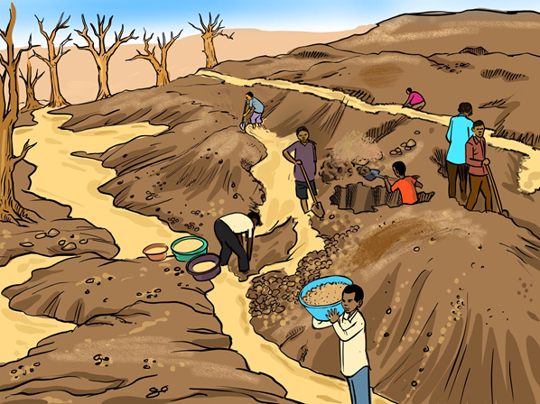

Minerals promote our national identity in the international community. For example, tanzanite is found only in Tanzania, which makes our country popular in the world.
The effects of mining on the environment
Although mining has several benefits, it can cause environmental degradation if the best and environment-friendly mining methods are not used. When mining ends, it leaves behind large pits. If these pits are not filled and the landscape restored, they destroy the appearance of the mined area. The destroyed land is unsuitable for other uses. The dust from mines can cause lung and eye diseases. Chemicals such as mercury, which is used to process minerals, if not properly managed, may contaminate water sources and affect human beings and aquatic organisms. Figure 10 illustrates the effects of mining activities on the environment.
